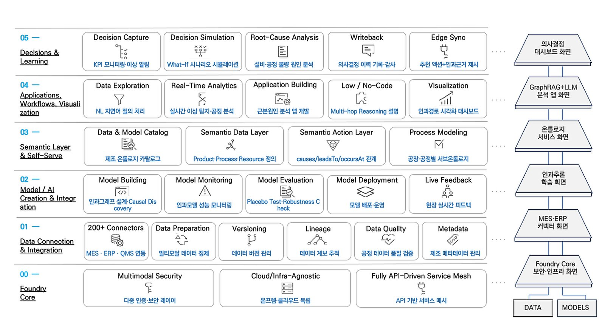
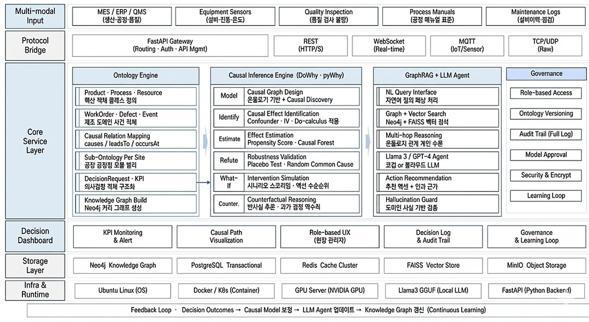
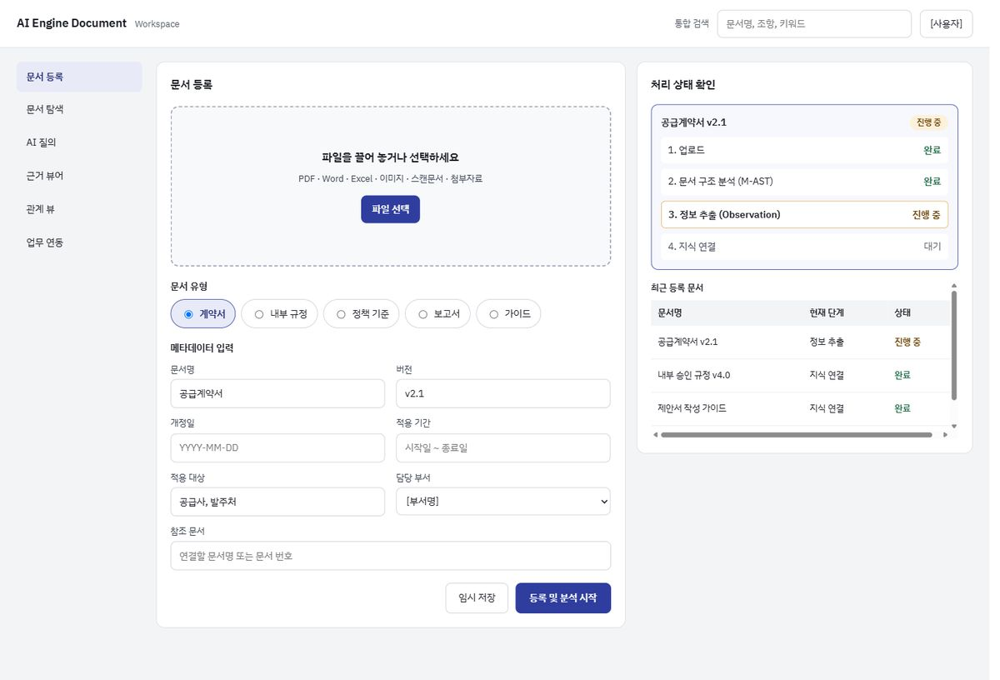
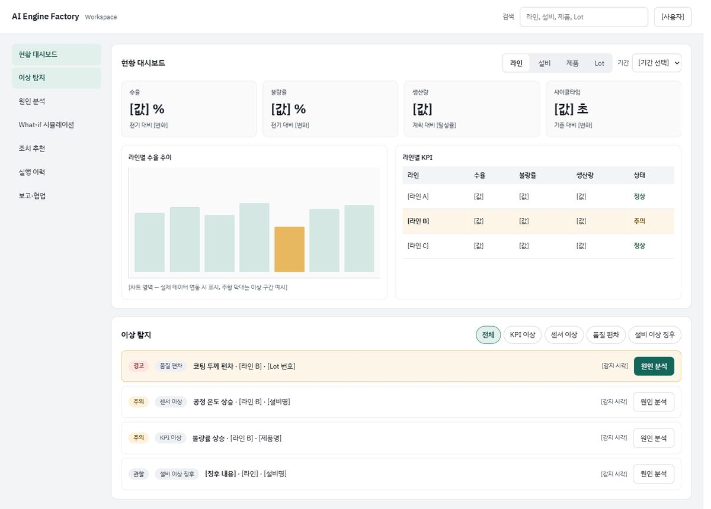
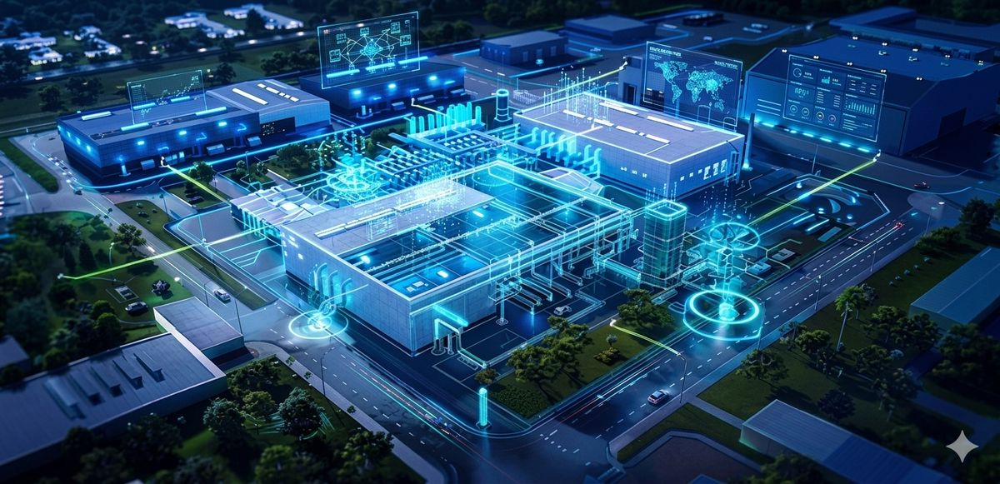

데이터를 업무의 언어로 연결합니다
문서, 센서, 설비 로그, 품질 데이터, 작업 이력은 각각 다른 형태로 흩어져 있습니다. AI Engine은 이를 제품·공정·설비·자재·품질·이벤트처럼 실제 업무의 객체와 관계로 구조화합니다.
Product
데이터를 이해하는 AI에서, 결과를 바꾸는 AI로
기업의 문서, 공정, 설비, 품질, 공급망 데이터를 하나의 지식 구조로 연결합니다. AI Engine은 단순히 정보를 찾아주거나 예측하는 데 그치지 않고, 결과에 영향을 준 원인과 앞으로 바꿔야 할 조치까지 제안합니다.
What is AI Engine?
기업에는 이미 많은 데이터와 AI 도구가 있습니다. 하지만 현장에서는 여전히 다음과 같은 질문에 답하기 어렵습니다.
문서 속 규정과 판단 근거는 어디에 있을까?
불량과 수율 저하는 왜 반복될까?
공정 조건을 바꾸면 품질과 생산성은 얼마나 달라질까?
수많은 데이터 중 지금 어떤 조치가 가장 효과적일까?
AI Engine은 흩어진 데이터를 기업의 현실 구조로 연결하고, 원인과 결과의 관계를 분석해 실행 가능한 의사결정을 제공합니다.
“무엇이 있는지”를 알려준다면,
“왜 이런 결과가 발생했고, 어떤 조치를 하면 어떤 효과가 기대되는가?”
The Principles of the AI Engine
문서, 센서, 설비 로그, 품질 데이터, 작업 이력은 각각 다른 형태로 흩어져 있습니다. AI Engine은 이를 제품·공정·설비·자재·품질·이벤트처럼 실제 업무의 객체와 관계로 구조화합니다.
“온도가 높을 때 불량이 많다”는 상관관계만으로는 충분하지 않습니다. AI Engine은 온도 변화가 점도·두께·불량률로 이어지는 원인 경로를 분석해, 개선해야 할 지점을 찾아냅니다.
분석 결과는 대시보드에 머물지 않습니다. 어떤 조건을 조정해야 하고, 예상 효과는 얼마인지, 어떤 순서로 대응해야 하는지까지 제안합니다.

Why AI Engine?
AI가 왜 그런 결론을 냈는지 근거와 경로를 함께 보여줍니다.
회사의 제품, 공정, 설비, 규정 체계를 그대로 반영합니다.
개인의 경험에 의존하던 판단을 조직의 지식으로 축적합니다.
문서부터 제조, 공급망, R&D까지 같은 엔진 위에서 업무 영역을 확장할 수 있습니다.

Products
Product 01
문서를 넘어, 판단의 근거까지
AI Engine Document는 기업의 규정, 계약서, 보고서, 정책자료, 연구자료, 고객 문의 이력을 하나의 지식 구조로 연결합니다. 필요한 정보를 찾고, 출처를 확인하고, 업무 판단에 바로 활용할 수 있도록 돕는 문서 지능화 AI입니다.
What problem does it solve?
기업에는 PDF, Word, Excel, 이미지, 스캔 문서, 계약서, 정책자료, 회의록, 보고서 등 다양한 문서가 축적되어 있습니다. 하지만 필요한 순간에는 다음과 같은 어려움이 반복됩니다.
문서는 계속 쌓이지만, 필요한 순간에는 같은 어려움이 반복됩니다.
문서를 저장하는 시스템이 아니라,
문서 속 지식을
업무 판단으로 연결하는 AI
AI Engine Document는 문서를 저장하는 시스템이 아니라, 문서 속 지식을 업무 판단으로 연결하는 AI입니다.
How does it work?
AI Engine Document는 PDF, Word, Excel, 이미지, 스캔 문서, 표, 첨부자료를 입력받아 문서의 구조와 의미를 해석합니다.
문서 속 조항, 계약 조건, 승인 절차, 정책 기준, 개정 이력, 이미지 속 정보를 구분해 단순 텍스트가 아닌 업무 정보로 전환합니다.
예를 들어 계약서의 “대금 지급일은 세금계산서 수령일로부터 30일 이내이다”라는 문장은 다음처럼 정리됩니다.
“대금 지급일은 세금계산서 수령일로부터 30일 이내이다”
정리된 정보는 조직·부서·고객·프로젝트·정책·절차와 연결되어, 특정 상황에 적용되는 기준과 절차를 빠르게 찾도록 돕습니다.
사용자가 질문하면 관련 문서를 검색해 답변하고, 원문 위치와 출처를 함께 제공합니다.
AI Engine Document는 계약 검토, 보고서 작성, 규정 문의 대응, 감사·컴플라이언스 대응, 온보딩, 고객 응대, 기술 자료 검토 등 실제 업무 흐름으로 연결됩니다.
Structure
AI Engine Document는 4개 층으로 구성됩니다. 문서와 데이터를 읽어 들이는 층에서 시작해, 업무 판단을 돕는 애플리케이션까지 하나의 흐름으로 이어집니다.
Core Value
데이터베이스와 문서, 센서와 로그, 이미지와 도면, 실험 결과와 업무 시스템을 연결합니다. 서로 다른 형식과 용어로 관리되던 데이터를 업무 객체와 속성, 관계를 기준으로 통합하고, 데이터가 무엇을 의미하는지와 서로 어떻게 연결되는지를 정의합니다.
AI Engine Document는 데이터의 표면적인 값만 확인하지 않습니다. 업무 객체와 이벤트, 조건과 결과 사이의 관계를 분석해 특정 현상이 어떤 맥락에서 발생했는지 파악합니다.
AI가 제시한 결과를 그대로 받아들이는 것이 아니라, 답변에 사용된 데이터와 문서, 변수와 관계, 계산식과 분석 과정을 확인할 수 있습니다.
AI Engine Document는 문서 검색, 데이터 조회, 관계 탐색, 인과추론, 시뮬레이션을 조합해 복잡한 업무 질문에 답합니다. 단순히 “무슨 일이 있었는가”를 설명하는 데서 멈추지 않고 실행 가능한 답까지 연결합니다.
Key Features
키워드 검색이 아니라 업무 질문으로 필요한 문서와 내용을 찾습니다.
“이 고객과 체결한 계약 중 납기 지연 시 위약금 조건이 있는 계약은 무엇인가요?”
“최신 내부 승인 기준에서 경영진 보고가 필요한 금액 기준은 얼마인가요?”
모든 답변에 원문 위치, 문서 버전, 페이지·조항·표 위치를 제공합니다. AI가 만든 답변인지, 문서에 실제로 근거가 있는지 명확히 구분할 수 있습니다.
유사 규정, 상충 조항, 참조 문서, 선행·후행 절차, 개정 이력을 연결해 보여줍니다. 여러 문서에 흩어진 기준을 하나의 관점에서 확인할 수 있습니다.
문서 유형, 적용 대상, 버전, 담당 부서, 유효 기간, 중요도 등을 자동으로 정리합니다. 문서 관리자는 문서를 단순 보관하는 대신, 업무에서 실제로 쓰이는 지식으로 운영할 수 있습니다.
법무·계약, 재무·회계, 인사·노무, 정책·규정, 연구·기술, 고객지원 등 목적별 질의 환경을 제공합니다. 동일한 문서라도 담당자의 역할에 맞게 필요한 정보와 근거를 중심으로 제시합니다.
현장 질문, 답변, 검토 이력, 사용자 피드백을 축적합니다. 시간이 지날수록 조직의 문서 지식이 더 정확하고 재사용 가능한 형태로 발전합니다.
Expectation

화면 예시입니다. 실제 화면은 도입 환경에 따라 달라질 수 있습니다.
Recommended for companies like this
AI Engine Document로 문서를 찾는 시간에서 판단하는 시간으로 바꾸세요.
Product 02
원인을 찾고, 효과를 예측하는 제조 AI
생산, 품질, 설비, 공정, 자재, 공급망 데이터를 연결해 불량과 수율 저하의 원인을 분석하고, 가장 효과적인 개선 조치를 제안합니다.
What problem does it solve?
제조 현장에는 데이터가 충분합니다. 하지만 데이터가 많다고 해서 의사결정이 쉬워지는 것은 아닙니다.
AI Engine Factory는 “무엇이 문제인가”를 넘어, “어디를 어떻게 바꿔야 개선되는가”까지 답합니다.
How does it work?
AI Engine Factory는 MES, ERP, QMS, SCADA, 설비 로그, 센서 데이터, 작업지시, 검사 성적서를 설비·공정·제품·Lot·자재·작업자·불량·검사값·환경 조건으로 연결된 하나의 온톨로지로 통합합니다.
이를 통해 특정 불량이나 수율 저하가 어떤 설비, 공정, 자재, 작업 조건과 연결되어 있는지 추적합니다.
단순 상관관계가 아니라 인과 경로를 분석해, 불량률·수율·사이클타임 등 목표 KPI에 영향을 주는 핵심 요인을 우선 제시합니다.
“온도를 낮추면 불량률이 얼마나 줄어들까?”처럼 조치 효과를 정량적으로 추정하고, 설비·교대조·제품군 등 조건별 효과도 분석합니다.
민감도 분석과 데이터 지지도 점검을 통해 결과의 신뢰도를 검증합니다.
What-if 시뮬레이션으로 예방정비 주기 변경, 공정 조건 조정, 자재 Lot 교체 등의 조치 전·후 결과를 비교합니다.
분석 결과를 바탕으로 우선 점검 대상과 조정할 공정 조건, 정비·품질 대응을 제안하며, 그 근거와 인과 경로를 함께 제공합니다.
불량률·수율·사이클타임 등 목표 KPI에 영향이 큰 요인을 우선 제시
Structure
AI Engine Factory는 4개 층으로 구성됩니다. 공장의 데이터를 읽어 들이는 층에서 시작해, 제조 현장의 의사결정을 돕는 애플리케이션까지 하나의 흐름으로 이어집니다.
Core Value
MES, ERP, QMS, SCADA, 설비, 자재, 공급망 데이터를 하나로 연결합니다. 시스템마다 다른 형식과 용어로 관리되던 데이터를 온톨로지의 업무 객체와 속성, 관계를 기준으로 통합합니다. 그리고 각 데이터가 무엇을 의미하는지, 서로 어떻게 연결되는지를 정의합니다.
AI Engine Factory는 데이터의 표면적인 값만 확인하지 않습니다. 시스템마다 다르게 기록된 같은 대상을 하나로 묶고, 관측된 사실을 함께 읽습니다. 이를 바탕으로 공정 조건, 자재 Lot, 공급 요인과 KPI 사이의 관계를 분석해, 불량이나 수율 저하가 어떤 맥락에서 발생했는지 파악합니다.
AI가 제시한 결과를 그대로 받아들일 필요가 없습니다. 분석에 사용된 데이터와 변수, 관계와 계산식, 분석 과정을 출처와 함께 확인할 수 있습니다.
AI Engine Factory는 원인·영향 분석과 조치별 효과 예측을 조합하고, 비용·납기·품질 제약을 반영해 최적안을 도출합니다. 단순히 “무슨 일이 있었는가”를 설명하는 데서 멈추지 않고, 현장 조치 후 결과를 모니터링하고 개선 효과를 검증하는 데까지 연결합니다. 그 결과는 불량·수율 원인 분석, 최적 조건·재발 방지 대응, 공급 리스크 조기 감지, 재고·생산·납기 최적화 같은 제조 의사결정으로 이어집니다.
Key Features
제품–공정–설비–자재–Lot–작업자–품질–유지보수 데이터를 업무 구조로 연결합니다. 공장·라인·제품군이 달라져도 공통 개념을 재사용하고, 현장 특성은 하위 온톨로지로 확장할 수 있습니다
불량, 수율 저하, 사이클타임 증가, 설비 다운타임 등의 원인 경로를 자동 탐색합니다. 여러 요인이 얽힌 복합 문제에서도 결과에 영향을 준 주요 경로를 우선적으로 보여줍니다.
공정 조건, 설비 상태, 자재 특성, 작업 패턴이 품질과 생산 KPI에 미치는 효과를 추정합니다. DML, 이중차분(DiD), g-formula, IPW, 회귀불연속설계(RDD) 등 문제 성격에 맞는 추정 방법을 활용할 수 있습니다.
공정 조건·설비 상태·자재 특성 변경에 따른 품질 및 생산 영향을 사전에 예측합니다. 실제 라인 테스트 전에 개선 방향을 비교하고, 리스크가 큰 조건을 걸러낼 수 있습니다.
KPI 영향도, 실행 가능성, 비용·제약 조건을 고려해 우선 조치 항목을 제시합니다. “무엇이 문제인가”에서 끝나지 않고, “무엇부터 바꿔야 하는가”를 제안합니다.
인과 경로, 근거 데이터, 추정 결과, 신뢰도, 예상 효과를 함께 제공합니다. 엔지니어와 현장 관리자가 AI 결과를 검토하고 의사결정에 활용하기 쉽도록 설계되어 있습니다.
Expectation

화면 예시입니다. 실제 화면은 도입 환경에 따라 달라질 수 있습니다.

Recommended for companies like this
AI Engine Factory는 제조 현장의 데이터를 원인 분석, 효과 예측, 실행 조치로 연결합니다.